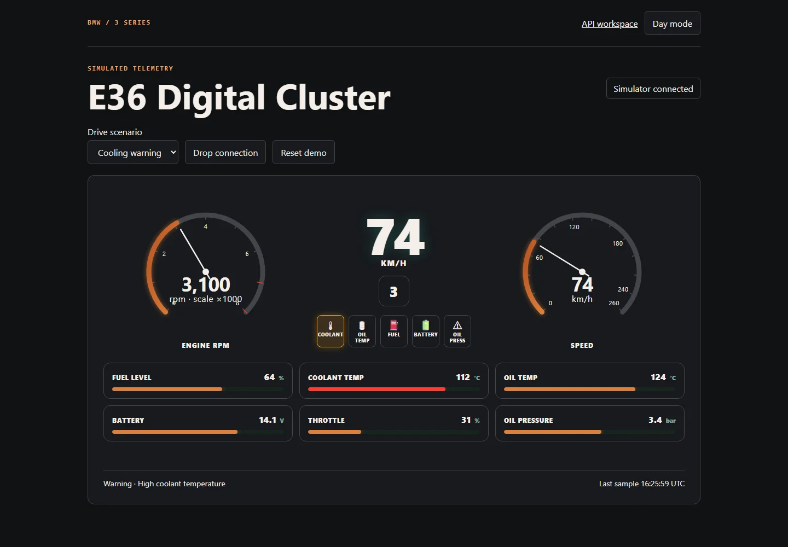
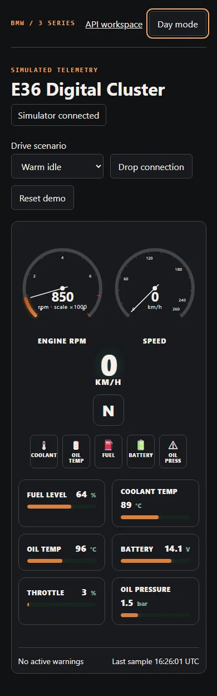
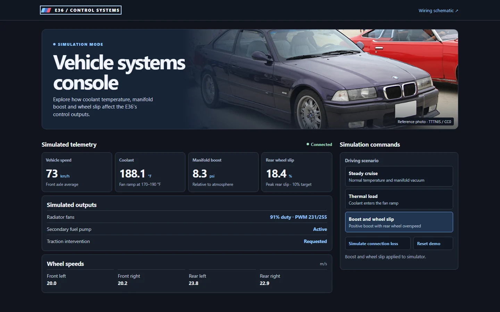
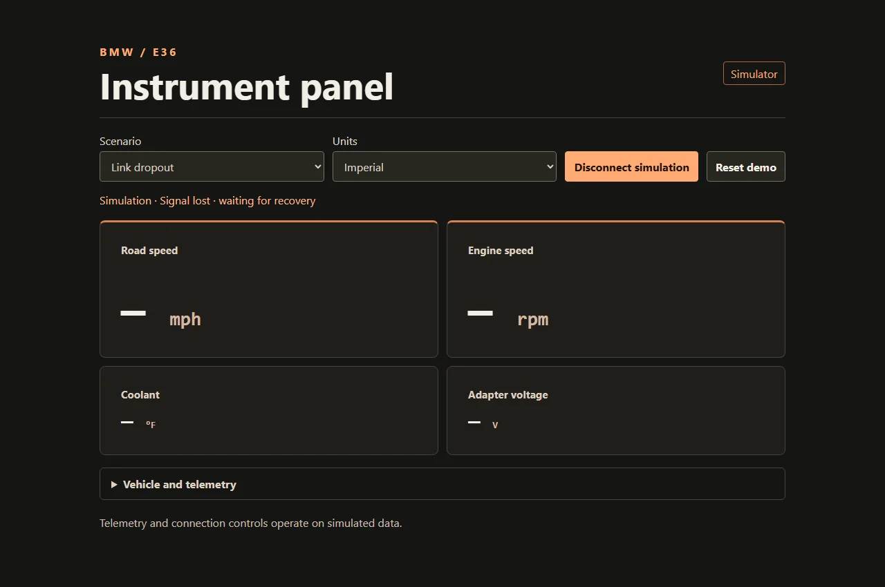

Featured project · Runtime screenshot
BMW E36 Automotive Systems
Three related prototypes explore controls, telemetry and a digital instrument cluster using simulated inputs.
Local demo · Project lead
Public source access pending.
My contribution
I led development of this project.
Controls
Arduino Mega control prototype and a hardware-free console for fan duty, secondary pump demand and wheel-slip requests. The browser model has no actuator connection.
Dashboard
Static browser instruments validate readings, expire stale frames and preserve scenario and unit preferences. Live adapter transport and the Android host remain unfinished.
Digital Cluster
React instruments show simulated drive scenarios, coolant warnings and connection recovery. A separate authenticated ASP.NET workspace stores telemetry sessions and presets.
Run the local demo
From the prepared project checkout, run these commands and open the address printed by the server. The repository may require access.
Digital Cluster (from project-2026)
cd bmw-e36-digital-cluster/frontend
npm ci
npm run dev -- --host 127.0.0.1 --port 5173 --strictPort
Controls (from project-2026)
cd BMW-E36-Control-Systems
npm run demo
Dashboard (from project-2026)
cd bmw-e36-dashboard
# Open bmw-dashboard-ui.html in a modern browser.



Problem
E36 enthusiasts need to explore control outputs, readable instruments and stale-data recovery before vehicle integration.
Architecture
Controls pairs an Arduino Mega prototype with a JavaScript scenario model. Dashboard validates and expires telemetry in a static browser panel. Digital Cluster shares a React instrument view between a browser simulator and a separate ASP.NET telemetry workspace.
Engineering decisions
- Clear or flag stale readings when the simulated connection fails.
- Separate browser simulations from acquisition and actuator control, with visible units and calibration assumptions.
Implemented workflow
- Controls: apply boost and wheel slip, inspect pump and traction-request indicators, then simulate a lost connection.
- Dashboard: try partial readings and link dropout, then switch metric and imperial units.
- Digital Cluster: select Road cruise, apply Cooling warning and reconnect after a frozen timestamp.
Verified result
The source handoffs record local demos, screenshots and commits for all three repositories. Browser workflows cover scenarios, warnings, units and recovery. Physical hardware and vehicle recovery remain unverified.
- Source README, prepared screenshots and the completion handoff were reviewed. Source check results are attributed to that handoff.
Scope and next steps
- All displayed inputs are simulated. Wiring, calibration, adapter compatibility and vehicle power-loss recovery need physical testing.
- Dashboard has no complete Android host or Bluetooth transport. Controls has no browser connection to USB, CAN or actuators.
- Scenario thresholds are illustrative. The traction output is a request indicator. Public repository access and hosted demos are pending.
Technology
React · TypeScript · JavaScript · Arduino · ASP.NET Core · PostgreSQL
Preview availability
Static runtime preview. No hosted interactive demo is available. The prepared improvements were verified in a local checkout and have not been pushed to GitHub; public source may differ from these captures. Use the repository documentation for the public version's setup requirements.
← Return to portfolio